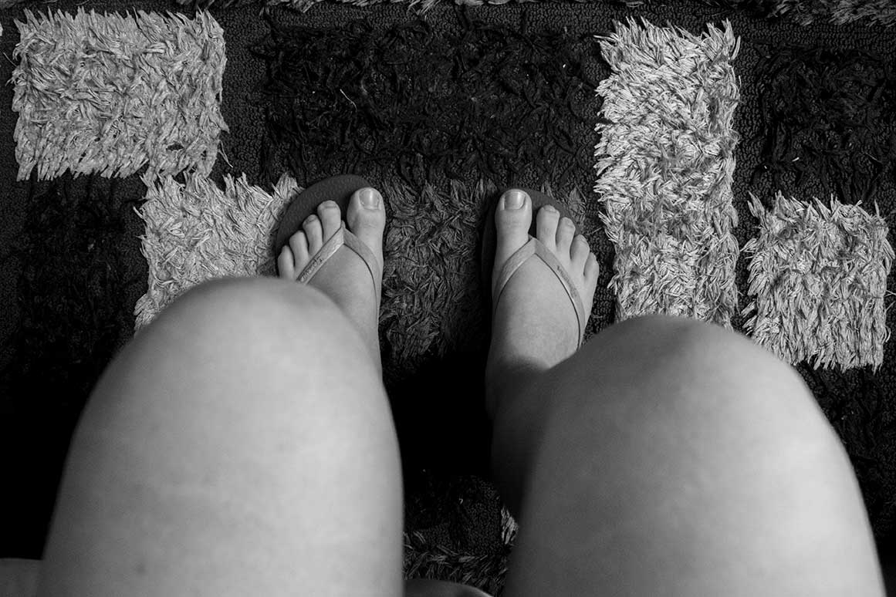
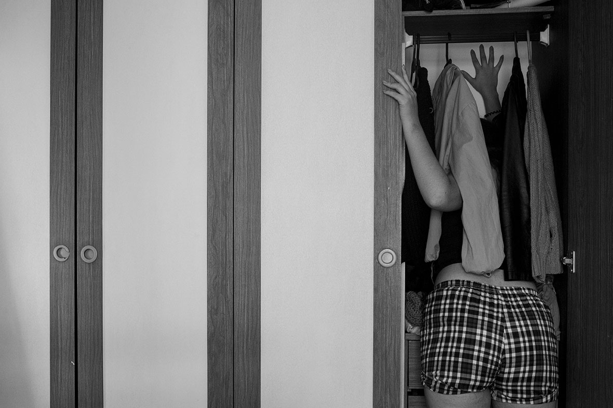
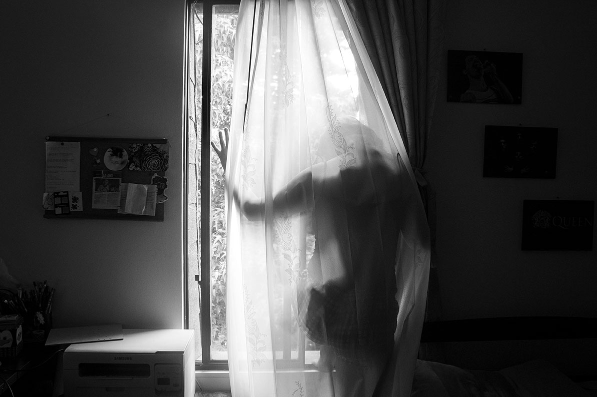
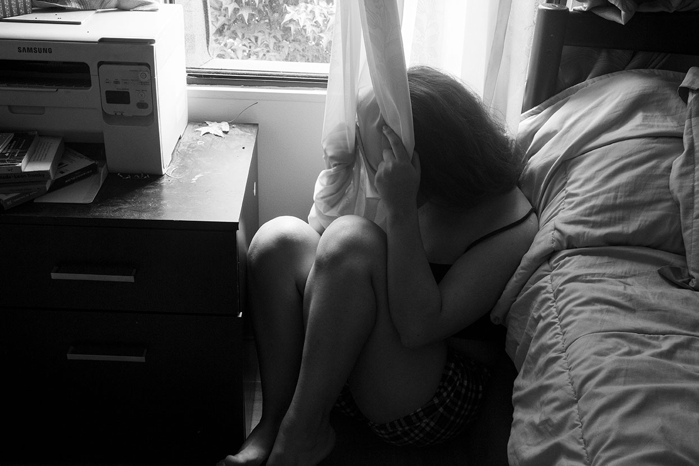
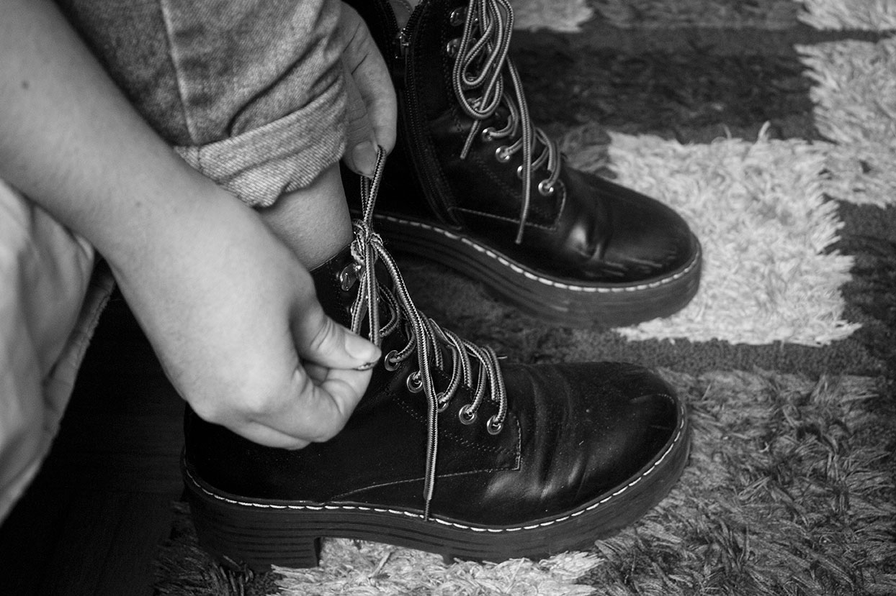

IF
Son más de las 8:00 am. La luz entra por mi ventana, pero esta es diferente, hace muchos años que dejó de serla, dejó de ser la hora de despertar para convertirse en un castigo más, es este momento lleno de confusión y rabia, donde en mi mente solo existe odio a cada día de mi existencia.
Así empieza la monotonía de los días, me levanto con las pocas fuerzas que me quedan ¡sí! levantarme ya es un logro, recorro mi habitación en busca de empezar el día y tomar una decisión, pero vuelvo otra vez a la cama, me ducho, busco ropa y vuelvo a la cama, me levanto a seguir buscando y vuelvo, así una y otra vez hasta que la ventana se vuelve atractiva como forma de salida, un impulso que me acompaña en cada despertar pero a la final, por suerte es solo eso, un impulso; llega el arrepentimiento y desesperación, es cuando me doy cuenta que algo anda mal desde hace rato.
 No soy valiente, no he tenido la valentía o posiblemente cobardía de hacerlo porque a la final no puedo escapar de la responsabilidad y el compromiso conmigo misma. Minutos después del trance solo pienso: quizá estos sentimientos estarán siempre, no podré evitarlos al levantarme, al buscar ropa, al estar con amigos y familia, al vivir el día a día. Sin embargo, ahí sigue la ventana al lado por si despierto nuevamente, aunque no sea la idea, al fin y al cabo, todo se trata de control, de encontrarse y reconocerse.

Sin olvidar que esto es un proceso muy sencillo e importante y que sabemos que lamentablemente existen personas que no lo toman en serio, mamá nos hizo el énfasis que se debe llevar acabo minimo cada dos horas, independientemente que salgamos o no, para así ayudar a eliminar cualquier pandemia evitando su expansión y obtener buena salud entre nosotros.Después de muchos intentos y varias horas, en medio de la confusión y un profundo sentimiento por permanecer y continuar, decido ponerme los zapatos.
